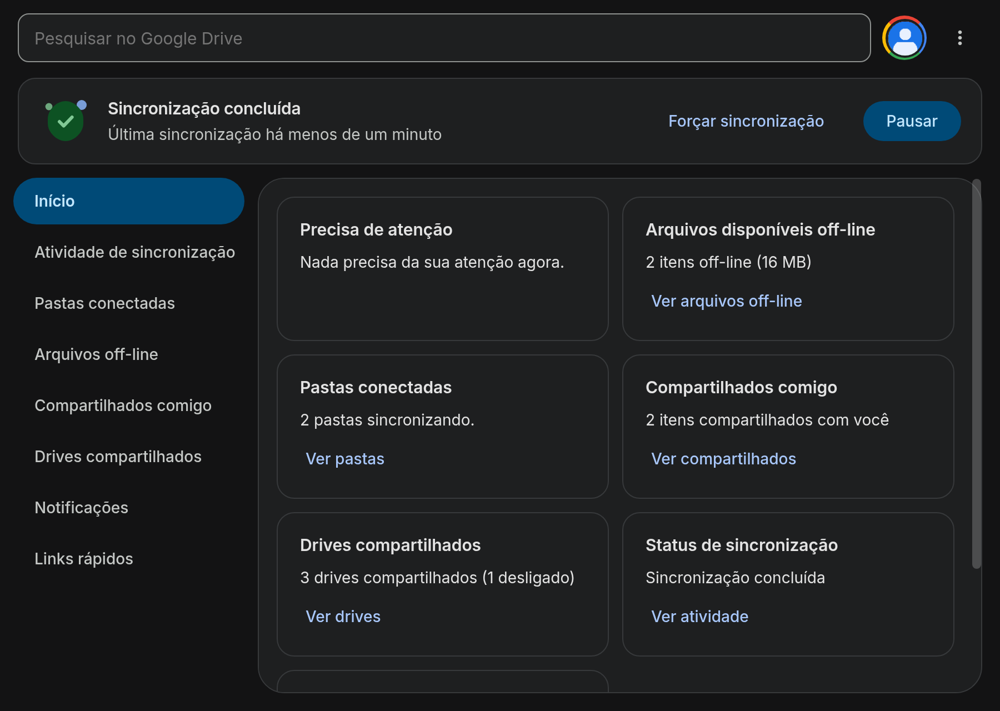

Referência
Recursos do app
Tudo o que o GDrive Desktop faz, organizado por área. Cada item aqui corresponde a um item do aplicativo oficial para Windows.1. A pasta do Drive
O app monta o seu Drive como uma pasta virtual via FUSE:| Pasta | Conteúdo |
|---|---|
~/Google Drive/Meu Drive | O Meu Drive inteiro. |
~/Google Drive/Drives compartilhados | Os Drives compartilhados da conta (só existe se a conta tiver algum). |
~/Google Drive/Computadores | As cópias das pastas do computador sincronizadas. |
~/Google Drive/.Lixeira do Drive | A lixeira do Drive, somente leitura. |
~/Google Drive/Lost and Found | Versões conflitantes e edições que não subiram. |
Modo Stream (padrão)
Os arquivos ficam na nuvem. Quando você abre um, só os trechos lidos são baixados — abrir um vídeo de 2 GB baixa o pedaço que você está vendo. É o modo que economiza mais espaço.Modo Espelho
Em Preferências › Google Drive › Espelhar arquivos, o Meu Drive inteiro vira uma pasta comum do computador, disponível mesmo sem internet. Antes de confirmar, a janela mostra quanto será baixado e quanto espaço livre existe. Fazer streaming dos arquivos volta ao modo anterior depois que tudo o que foi alterado subir — e pode mandar a pasta do Espelho para a lixeira do sistema, se você permitir.Não existe o limite de 4 GB por arquivo que a unidade virtual do Windows impõe. Aqui o limite é o da nuvem.
2. Arquivos sob demanda e off-line
- Disponível off-line marca um arquivo ou pasta para ficar no disco. - Somente on-line desfaz e libera o espaço na hora, sem mexer no que está aberto ou com envio pendente. - O estado pode ficar misto (parte no disco, parte na nuvem) e a tela mostra isso. - O cache guarda o conteúdo em blocos de 1 MiB, com janelas que crescem na leitura sequencial. A tela Arquivos off-line mostra o que está no computador e o espaço usado. Trocar a pasta do cache nas configurações leva os arquivos baixados para o lugar novo sem reiniciar o app, com um aviso que mostra a porcentagem.3. Sincronização
- Envio e recebimento automáticos. - Fila que sobrevive a reinícios e a quedas de rede: os envios pendentes ficam no disco. - Conflitos guardados no Lost and Found — nunca sobrescritos em silêncio. - Lixeira: excluir da pasta do Drive manda para a lixeira do Drive (30 dias). - Limites de banda de envio e download. - Pausa e retomada a qualquer momento, pela bandeja ou pela janela.A pasta .Lixeira do Drive é somente leitura. Para restaurar, arraste o item para uma
pasta do Drive (se já existir um arquivo com o mesmo nome, os dois ficam). A lixeira do Dolphin
também restaura o que foi mandado por ela.
4. Documentos Google
Docs, Planilhas e Apresentações aparecem na pasta como ponteiros (`.gdoc`, `.gsheet`, `.gslides`) e abrem no navegador com duplo clique. Copiar um ponteiro para outra pasta cria um atalho do Drive e avisa que o arquivo original continua na pasta de origem.5. Bandeja e janela principal
A bandeja mostra o estado da sincronização e traz: pausar/retomar, pesquisa (também pelo atalho global, quando o portal do KDE aceita), lista de erros, arquivos off-line, preferências e sair. A janela principal tem:| Seção | O que mostra |
|---|---|
| Cabeçalho | O estado da sincronização, a última sincronização e o botão Pausar/Retomar. |
| Início | O que precisa de atenção, os arquivos off-line, os compartilhados com você e o estado da sincronização. |
| Atividade de sincronização | O que subiu, desceu ou foi para a lixeira, com o menu de cada linha (abrir, copiar link, compartilhar, cancelar um envio). |
| Pastas conectadas | As pastas do computador que estão sincronizadas. |
| Drives compartilhados | Abrir cada drive na pasta ou na web. |
| Notificações | O histórico de avisos. |
| Mais opções | Arquivos off-line, lista de erros, preferências, gerenciar drives compartilhados, desconectar todas as contas e sair. |

6. Primeiro uso e tour
Sem conta, o app abre o primeiro uso: um guia do Client ID com botões que abrem cada página do Google Cloud e copiam os valores, o Resumo do que foi escolhido e o tour da janela principal (que também fica nas Preferências).7. Miniaturas
As imagens aparecem com miniatura no Dolphin e em outros gerenciadores, usando as miniaturas do próprio Google — sem baixar os arquivos. As miniaturas ficam no cache padrão do freedesktop (`~/.cache/thumbnails`).8. Menu do botão direito
Nos arquivos e pastas do Drive aparece o submenu Google Drive: - Abrir no navegador - Compartilhar - Copiar link (o aviso diz quem pode abrir) - Gerenciar versões - Adicionar atalho ao Drive - Disponível off-line / Somente on-line (marcado conforme o estado atual) - Novo Documento, Planilha ou Apresentação Google na pasta - Atualizar a pasta - Ver a lixeira Fora da pasta do Drive o submenu não aparece. Veja a página de gerenciadores de arquivos para os detalhes de cada um.9. Compartilhar e gerenciar versões
A janela Compartilhar traz pessoas, papéis (leitor, comentador, editor), acesso geral e link. A janela Gerenciar versões lista as versões guardadas de um arquivo, da atual para a mais antiga, e deixa baixar, restaurar ou manter para sempre.No app oficial, as versões ficam numa pasta oculta. Aqui, o botão direito abre a janela “Gerenciar versões”.
10. Contas
- Até 4 contas Google ao mesmo tempo, cada uma com a sua pasta (`~/Google Drive (11. Drives compartilhados
- Aparecem na pasta de cada conta e numa visão própria na janela principal. - A janela Gerenciar drives compartilhados escolhe quais drives aparecem e cria um novo. - Mover um arquivo para um Drive compartilhado muda quem pode vê-lo: o app avisa depois da movimentação, porque uma pasta montada não tem como perguntar no meio de um `mv`. - Os Drives compartilhados continuam em Stream mesmo no modo Espelho, como no app oficial.12. Pastas do computador e backup de dispositivos
Em Preferências › Meu computador › Adicionar pasta, uma pasta do computador é sincronizada com `Computadores/13. Proteção e recuperação
Atividade suspeita
Se muitos arquivos forem regravados de um jeito que lembra um vírus que cifra arquivos, ou renomeados para extensões de arquivo cifrado (`.locked` e similares), o app pausa os envios da conta e avisa. Fotos, vídeos, `.zip` e outros formatos já comprimidos não contam. No aviso: Verificar abre a janela principal, Eu reconheço esta atividade retoma e não avisa de novo por uma hora, e Permitir sincronização retoma.Itens recuperados
Se os dados do app de uma conta se danificarem (queda de energia, disco com defeito), eles são guardados numa pasta `recuperacao` e a conta é lida de novo do Drive. As edições que ainda não tinham subido vão para o Lost and Found, na pasta “Recuperados <data>”. Nada é reenviado sozinho: mova de volta para a pasta do Drive o que quiser manter.14. Avisos e notificações
O app avisa sobre: falta de permissão, conta bloqueada, armazenamento quase cheio, disco cheio, envios parados há dias, itens recuperados, limites do Drive, login bloqueado pela organização, itens movidos para onde outras pessoas veem e nova versão do app. Cada tipo pode ser desligado nas preferências de notificação (`DoNotShowNotifications`).15. Diagnóstico e feedback
Em Mais opções: - Enviar feedback abre no navegador uma issue do projeto já preenchida com a versão e o sistema. - Gerar informações de diagnóstico grava na Área de trabalho um `.tar.gz` com os registros, o sistema e as preferências — sem tokens, senhas nem e-mails inteiros. - Ativar o registro detalhado grava mais detalhes nos registros por um dia. - Redefinir os dados locais apaga os dados do app da conta neste computador e a lê de novo do Drive, com o mesmo login (só sem envios pendentes). Com Enviar relatórios de erro automaticamente ligado, depois de uma falha o app oferece abrir a issue com o relatório — quem envia é você.16. Preferências
As preferências ficam em `~/.config/gdrive-desktop-linux/preferences.toml` e podem ser editadas à mão (um arquivo ilegível não derruba o app: ele avisa no registro e usa o padrão até você corrigir).| Chave | O que faz | Padrão |
|---|---|---|
AllowedAccountsPattern | Regex dos e-mails que podem entrar. | — |
AutoStartOnLogin | Inicia a bandeja junto com o sistema. | true |
AutomaticErrorReporting | Oferece enviar relatórios de erro automaticamente. | false |
BandwidthRxKBPS | Limite de download, em KB/s. | — |
BandwidthTxKBPS | Limite de envio, em KB/s. | — |
ContentCacheMaxKbytes | Tamanho máximo do cache de conteúdo. | — |
ContentCachePath | Pasta do cache de conteúdo. | — |
DefaultMountPoint | Pasta onde o Drive é montado. | — |
DefaultWebBrowser | Navegador usado para abrir o login e os documentos. | — |
DirectConnection | Conecta direto, sem proxy. | false |
DisableAddAccount | Impede adicionar contas. | false |
DisableCRLCheck | Não consulta a lista de revogação de certificados. | false |
DisableExternalMediaSync | Desliga o backup de dispositivos externos. | false |
DisableLocalizedVirtualFolders | Usa os nomes das pastas virtuais em inglês. | false |
DisableMirroredFolders | Desliga a sincronização de pastas do computador. | false |
DisableMirroredMyDrive | Desliga o modo Espelho. | false |
DisableOnboardingDialog | Pula o diálogo de primeiro uso. | false |
DisableSSLValidation | Não valida o certificado TLS. | false |
DoNotShowNotifications | Lista de tipos de aviso desligados. | vazio |
ExcludedFolders | Pastas excluídas da indexação. | vazio |
IgnoreNodeModules | Ignora pastas node_modules. | false |
MinFreeDiskSpaceKBytes | Espaço livre mínimo no disco antes de parar de gravar. | 512000 (500 MB) |
OpenOfficeFilesInDocs | Abre arquivos do Office no Google Docs. | true |
PauseSyncingOnMeteredConnection | Pausa a sincronização em conexão limitada. | false |
PromptToBackupDevices | Pergunta sobre o backup de dispositivos conectados. | true |
ProxyServer | Proxy manual (http, https, socks5, socks5h). | — |
SearchHotKey | Atalho global de pesquisa (portal XDG). | — |
ShowMountPointInSidebar | Mostra a pasta do Drive no painel do Dolphin. | true |
TrustSystemRootCerts | Confia nos certificados de raiz do sistema. | true |
TrustedRootCertsFile | Arquivo extra de certificados confiáveis. | — |
UITheme | Tema da interface. | — |
17. Assistentes de IA (MCP)
O programa `gdrive-desktop-linux-mcp` deixa um assistente compatível com o Model Context Protocol consultar e organizar o Drive pelo serviço do app, sem credencial própria. Veja a página da CLI para o registro do servidor.Reference
App features
Everything GDrive Desktop does, organized by area. Each item here corresponds to an item of the official Windows application.1. The Drive folder
The app mounts your Drive as a virtual folder via FUSE:| Folder | Content |
|---|---|
~/Google Drive/My Drive | Your whole My Drive. |
~/Google Drive/Shared drives | The shared drives of the account (only exists if the account has any). |
~/Google Drive/Computers | Copies of the synced computer folders. |
~/Google Drive/.Drive Trash | The Drive trash, read-only. |
~/Google Drive/Lost and Found | Conflicting versions and edits that have not uploaded. |
Stream mode (default)
The files stay in the cloud. When you open one, only the chunks you read are downloaded — opening a 2 GB video downloads the piece you are watching. This is the mode that saves the most space.Mirror mode
In Preferences › Google Drive › Mirror files, your whole My Drive becomes a regular folder on the computer, available even without internet. Before you confirm, the window shows how much will be downloaded and how much free space there is. Stream the files again goes back to the previous mode once everything that changed has uploaded — and it can send the Mirror folder to the system trash, if you allow it.There is no 4 GB per-file limit like the Windows virtual drive has. Here the limit is the cloud's.
2. On-demand files and offline
- Available offline marks a file or folder to stay on disk. - Online only undoes it and frees the space right away, without touching what is open or has a pending upload. - The state can be mixed (part on disk, part in the cloud) and the screen shows it. - The cache stores content in 1 MiB blocks, with windows that grow on sequential reads. The Offline files screen shows what is on the computer and the space used. Changing the cache folder in the settings moves the downloaded files to the new place without restarting the app, with a notice that shows the percentage.3. Synchronization
- Automatic upload and download. - A queue that survives restarts and network drops: pending uploads stay on disk. - Conflicts kept in Lost and Found — never silently overwritten. - Trash: deleting from the Drive folder sends it to the Drive trash (30 days). - Bandwidth limits for upload and download. - Pause and resume at any time, from the tray or from the window.The .Drive Trash folder is read-only. To restore, drag the item into a Drive folder
(if a file with the same name already exists, both stay). The Dolphin trash also restores what it
sent there.
4. Google Docs
Docs, Sheets and Slides show up in the folder as pointers (`.gdoc`, `.gsheet`, `.gslides`) and open in the browser with a double click. Copying a pointer to another folder creates a Drive shortcut and warns that the original file stays in the source folder.5. Tray and main window
The tray shows the sync state and gives you: pause/resume, search (also through the global shortcut, when the KDE portal allows it), the error list, offline files, preferences and quit. The main window has:| Section | What it shows |
|---|---|
| Header | The sync state, the last sync and the Pause/Resume button. |
| Home | What needs attention, the offline files, what is shared with you and the sync state. |
| Sync activity | What was uploaded, downloaded or trashed, with the menu of each row (open, copy link, share, cancel an upload). |
| Connected folders | The computer folders that are being synced. |
| Shared drives | Open each drive in the folder or on the web. |
| Notifications | The history of warnings. |
| More options | Offline files, error list, preferences, manage shared drives, disconnect all accounts and quit. |
6. First run and tour
With no account connected, the app opens the first run: a Client ID guide with buttons that open each Google Cloud page and copy the values, the Summary of what was chosen and the tour of the main window (also available in the Preferences).7. Thumbnails
Images show a thumbnail in Dolphin and other file managers, using Google's own thumbnails — without downloading the files. Thumbnails live in the standard freedesktop cache (`~/.cache/thumbnails`).8. Right-click menu
On files and folders of the Drive the Google Drive submenu appears: - Open in the browser - Share - Copy link (the notice tells who can open it) - Manage versions - Add shortcut to Drive - Available offline / Online only (checked according to the current state) - New Google Doc, Sheet or Slides in the folder - Refresh the folder - Show the trash Outside the Drive folder the submenu does not show up. See the file managers page for the details of each one.9. Sharing and managing versions
The Share window brings people, roles (reader, commenter, editor), general access and the link. The Manage versions window lists the versions stored for a file, from the current one to the oldest, and lets you download, restore or keep forever.In the official app, versions live in a hidden folder. Here, the right-click menu opens the “Manage versions” window.
10. Accounts
- Up to 4 Google accounts at once, each with its own folder (`~/Google Drive (11. Shared drives
- They show up in each account folder and in a dedicated view in the main window. - The Manage shared drives window picks which drives show up and creates a new one. - Moving a file into a shared drive changes who can see it: the app warns after the move, because a mounted folder cannot ask in the middle of a `mv`. - Shared drives stay in Stream even in Mirror mode, just like the official app.12. Computer folders and device backup
In Preferences › My computer › Add folder, a folder on your computer is synced with `Computers/13. Protection and recovery
Suspicious activity
If many files are rewritten in a way that resembles a file-encrypting virus, or renamed to encrypted extensions (`.locked` and similar), the app pauses the uploads of that account and warns you. Photos, videos, `.zip` and other already-compressed formats do not count. In the notice: Check opens the main window, I recognize this activity resumes and does not warn again for an hour, and Allow syncing resumes.Recovered items
If the app data of an account gets damaged (power outage, faulty disk), it is kept in a `recovery` folder and the account is read from the Drive again. Edits that had not uploaded go to the Lost and Found, in the “Recovered <date>” folder. Nothing is re-uploaded on its own: move back to the Drive folder whatever you want to keep.14. Warnings and notifications
The app warns about: missing permission, blocked account, nearly full storage, disk full, uploads stalled for days, recovered items, Drive limits, sign-in blocked by the organization, items moved where other people can see them, and new app versions. Each kind can be switched off in the notification preferences (`DoNotShowNotifications`).15. Diagnostics and feedback
In More options: - Send feedback opens a pre-filled project issue in your browser with the version and the system. - Generate diagnostic information writes a `.tar.gz` to the Desktop with the logs, the system and the preferences — with no tokens, passwords or full e-mails. - Enable detailed logging records more details for a day. - Reset local data wipes the app data of the account on this computer and reads it from the Drive again, with the same login (only without pending uploads). With Send error reports automatically enabled, after a failure the app offers to open the issue with the report — you are the one who sends it.16. Preferences
Preferences live in `~/.config/gdrive-desktop-linux/preferences.toml` and can be edited by hand (an unreadable file does not bring the app down: it is logged and the defaults are used until you fix it).| Key | What it does | Default |
|---|---|---|
AllowedAccountsPattern | Regex of the e-mails allowed to sign in. | — |
AutoStartOnLogin | Starts the tray with the system. | true |
AutomaticErrorReporting | Offers to send error reports automatically. | false |
BandwidthRxKBPS | Download limit, in KB/s. | — |
BandwidthTxKBPS | Upload limit, in KB/s. | — |
ContentCacheMaxKbytes | Maximum size of the content cache. | — |
ContentCachePath | Folder of the content cache. | — |
DefaultMountPoint | Folder where the Drive is mounted. | — |
DefaultWebBrowser | Browser used to open the login and the documents. | — |
DirectConnection | Connects directly, without proxy. | false |
DisableAddAccount | Prevents adding accounts. | false |
DisableCRLCheck | Skips the certificate revocation list check. | false |
DisableExternalMediaSync | Turns off the backup of external devices. | false |
DisableLocalizedVirtualFolders | Uses English names for the virtual folders. | false |
DisableMirroredFolders | Turns off the syncing of computer folders. | false |
DisableMirroredMyDrive | Turns off Mirror mode. | false |
DisableOnboardingDialog | Skips the first run dialog. | false |
DisableSSLValidation | Skips TLS certificate validation. | false |
DoNotShowNotifications | List of warning kinds turned off. | empty |
ExcludedFolders | Folders excluded from indexing. | empty |
IgnoreNodeModules | Ignores node_modules folders. | false |
MinFreeDiskSpaceKBytes | Minimum free disk space before it stops writing. | 512000 (500 MB) |
OpenOfficeFilesInDocs | Opens Office files in Google Docs. | true |
PauseSyncingOnMeteredConnection | Pauses syncing on a metered connection. | false |
PromptToBackupDevices | Asks about backing up connected devices. | true |
ProxyServer | Manual proxy (http, https, socks5, socks5h). | — |
SearchHotKey | Global search shortcut (XDG portal). | — |
ShowMountPointInSidebar | Shows the Drive folder in the Dolphin panel. | true |
TrustSystemRootCerts | Trusts the system root certificates. | true |
TrustedRootCertsFile | Extra file of trusted certificates. | — |
UITheme | Interface theme. | — |